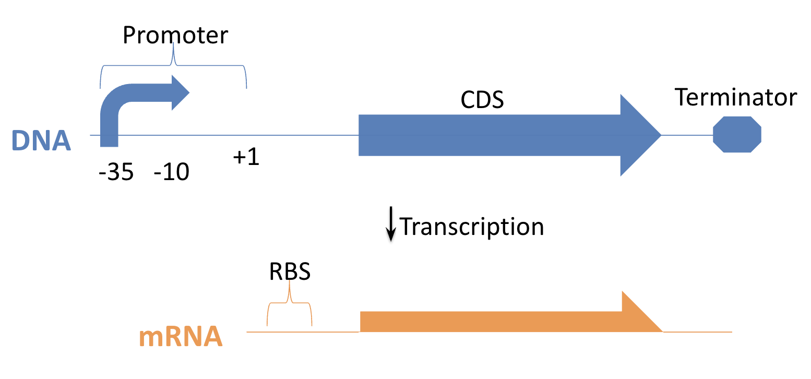
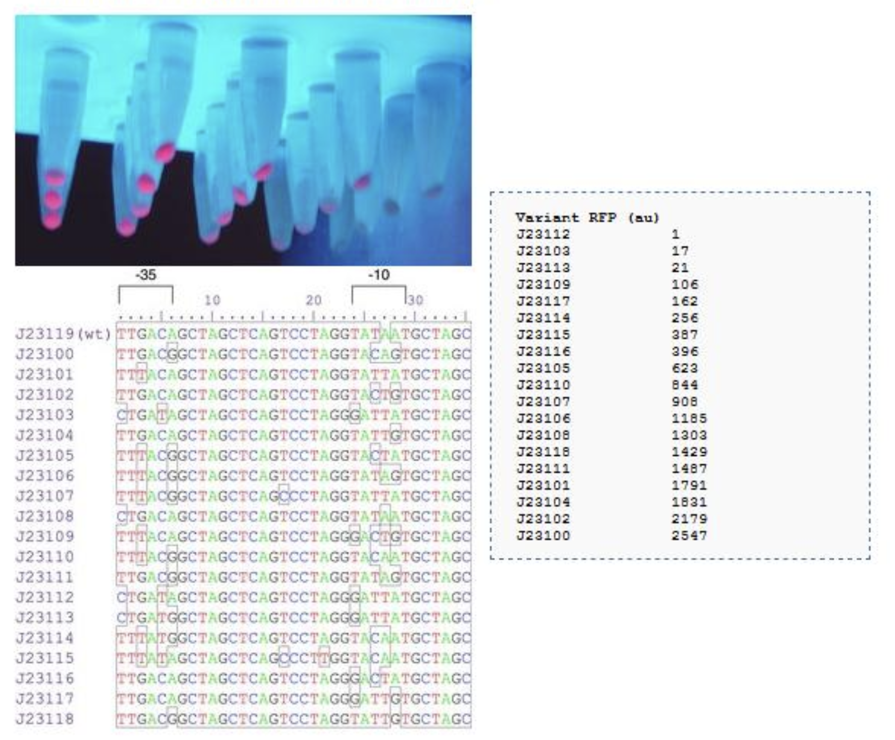
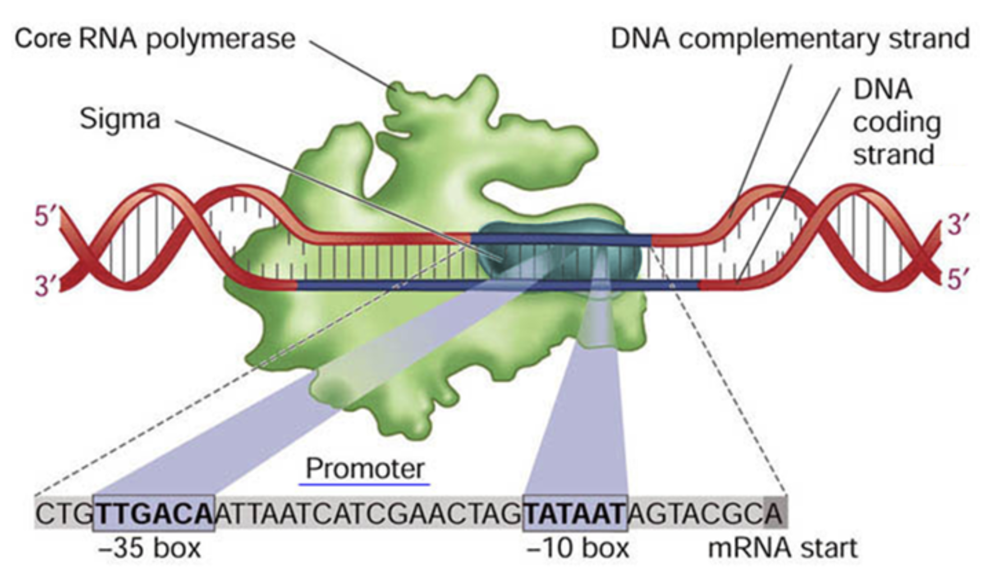
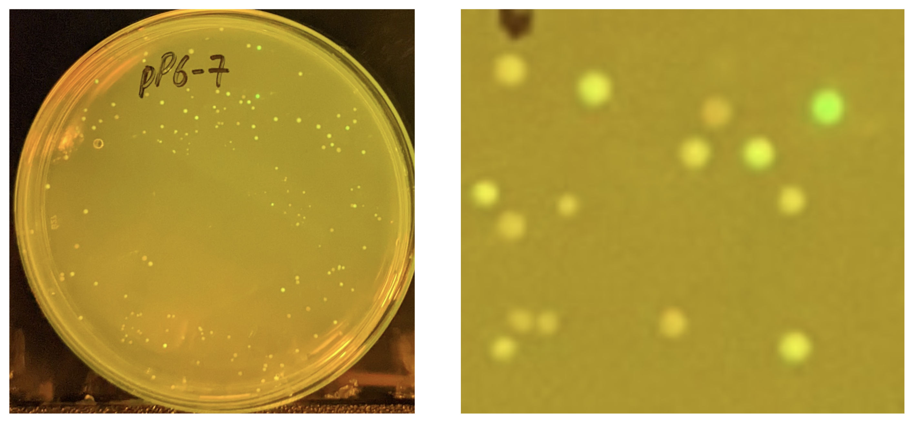

pP6 Intro: Finding Strong Promoters in E. coli¶
Goal of the Experiment¶
The goal of this experiment is to build new DNA control sequences called promoters that drive very strong gene expression. You will create a collection of bacteria, each with a different promoter, and then pick the brightest green colonies. Finally, you will measure how strong those promoter parts are and compare them to other sequences we already know.
Background: Transcription in E. coli¶
 Figure: Transcription in E. coli. RNA polymerase binds the promoter at the -35 and -10 sites, initiates at +1, and transcribes a coding sequence (CDS) into mRNA with an RBS. The transcript ends at a terminator sequence.
When RNA polymerase binds to a promoter in E. coli, it begins transcription at the +1 position, synthesizing an mRNA strand. This mRNA includes a ribosome binding site (RBS) and a coding sequence (CDS). The -10 and -35 sequences upstream of the +1 site strongly influence transcription strength.
The J23100 Promoter Family¶
Years ago, a standard set of synthetic promoters was developed by mutating a parent sequence called J23119. This set, known as the J23100 promoter family, provides a spectrum of expression strengths and has proven very useful for fine-tuning gene expression.
These promoters are ideal when you want to scan through different expression levels of the same gene using well-characterized sequences. Each member of the family was created by introducing mutations into the -35 and -10 boxes of J23119, while keeping the flanking sequence constant.
 Figure: The J23100 promoter family. Variants were created by mutating the -35 and -10 regions while keeping flanking sequences constant. Fluorescence and sequence alignment show relative expression strengths.
Why Build New Promoter Libraries?¶
Although the J23100 family is widely used, it has some limitations:
- All promoters share a nearly identical sequence backbone, making them prone to homologous recombination when used together in a single plasmid.
- Repeating these sequences interferes with PCR-based edits and makes cloning less reliable.
To overcome these issues, we aim to build multiple promoter families with similar activity ranges—but based on entirely distinct sequences. These new libraries can be used together safely in the same construct and facilitate more advanced synthetic biology designs.
The pP6 Library Design¶
The pP6 experiment is designed to generate a sixth-generation promoter library following this strategy.
We retain only the minimal motifs required for strong σ⁷⁰ recognition and randomize all other surrounding bases. This allows us to create new promoters that are strong, functional, and non-redundant.
- Fix the -35 and -10 consensus motifs.
- Randomize all other positions.
 Figure: σ⁷⁰ consensus promoter. The sigma factor of RNA polymerase recognizes the -35 (TTGACA) and -10 (TATAAT) boxes and initiates transcription at the +1 site. This image shows the promoter region unwound and engaged by polymerase.
We also add 4 random bases upstream and downstream, yielding 31 degenerate positions in total.
Construction File¶
We use a "construction file" to formally describe how DNA parts are assembled. Each line represents a biochemical reaction step using standardized syntax.
The pP6 promoter library is built using a two-step process involving PCR and Golden Gate assembly.
We will use a technique called EIPCR (Enzymatic Inverse PCR), which involves amplifying the entire plasmid by PCR. Each PCR primer includes a constant 3′ annealing region and a 5′ overhang containing degenerate bases (the N's). The 'N' effectively means "pick a random base from A, T, C, or G for this position". This introduces variability into the unconserved promoter regions:
Primers:
>P6libF2
CAGTAggtctcgATAATNNNNNNANNNNGTTAGTATTTCTCCTCGTCTAC
>P6libR2
CCAAAggtctcgTTATANNNNNNNNNNNNNNNNNTGTCAANNNNGAACCCAGGACTCCTCGAAGTC
Construction of pP6
# PCR reaction
# step primer1 primer2 template product
PCR P6libF2 P6libR2 pJ12 P6
# Golden Gate assembly
# step dna enzyme product
GoldenGate P6 BsaI pP6
Expected Outcome¶
The product of the reaction is a circular plasmid with a unique randomized promoter upstream of an amilGFP reporter.
During transformation, typically only 1 plasmid molecule enters a cell, confers resistance, and results in a colony on your petri dish. Thus, each colony on your transformation plate represents a unique promoter. When exposed to blue light, colonies fluoresce with varying intensity depending on promoter strength.

Figure: A pP6 transformation plate under blue light, showing colonies that express varying levels of GFP due to differences in promoter strength. The highlighted region is zoomed in to reveal diverse green intensities among clones, even though all share the core consensus motif. This illustrates the wide range of activities produced by flanking sequence variation—J23119 is unusually strong for this pattern.
Picking Colonies and Sequencing¶
You’ll select the brightest colonies (most green) for follow-up:
- Grow in liquid culture
- Miniprep DNA
- Submit for sequencing
- Analyze the sequence to identify the promoter
Note: Smaller, slow-growing colonies might encode the strongest promoters. Don’t skip them!
Getting Started¶
-
Download the pP6 lab sheets and sequences:
Google Drive - pP6 Materials -
Make a copy of this spreadsheet:
pP6 LabSheet Workbook -
Fill in your name and ID, and print the lab worksheets. You may also use your phone, tablet, or notebook. You could also write out your own notes instead.
-
Read the tutorial, take the quiz, and watch the demo videos before each lab activity.
All Demo Videos¶
All the videos are available in Media Gallery on Bcourses:
- pP6-2022-1-PCR
- pP6-2022-2-Gel
- pP6-2022-3-Zymo
- pP6-2022-4-Assembly
- pP6-2022-5-Transformation
- pP6-2022-6-Pick
- pP6-2022-7-Miniprep
- pP6-2022-8-Sequencing
- pP6-2022-9-Sequence Analysis
Next¶
When you're ready, proceed to the Pipetting tutorial to learn how to use a micropipette correctly before starting wetlab work.